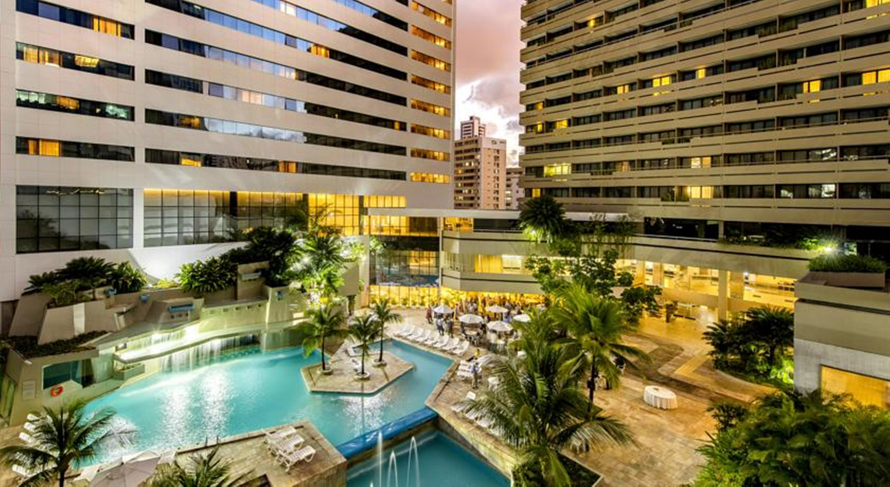

@@include('header.htm')

@@include('blocks/navigation.htm')

@@include('blocks/page-title.htm',{
"title" : "Venue: Mar Hotel",
"page" : "Venue: Mar Hotel"
})

<section class="section venue">
	<div class="container">
		<div class="content-block">
			<h2>Information</h2>
			<div class="description-one">
				<p>
					IEEE LA-CCI 2023 will take place at <ins><b><a href="https://www.marhotel.com.br/" target="_blank">Mar Hotel - Recife</a></b></ins>.
				</p>
				<p>
					Mar Hotel Conventions sits in an enviable location on Boa Viagem Beach, 300 meters from the shoreline, making it an irresistible destination for both national and international tourists. Positioned approximately 3 kilometers away from Recife / Guararapes - Gilberto Freyre International Airport and just around 10 kilometers from the bustling city center, the hotel ensures easy access for even the most discerning travelers.
				</p>
				<p>
					The hotel's distinguishing features lie in its commitment to comfort, convenience, and top-notch services, setting it apart from the rest. With a proven track record of success in the national hotel industry, it continues to impress and exceed expectations.
				</p>
			</div>
			<div class="google-map">
				<iframe src="https://www.google.com/maps/embed?pb=!1m14!1m8!1m3!1d15798.80161534168!2d-34.9043826!3d-8.1319525!3m2!1i1024!2i768!4f13.1!3m3!1m2!1s0x7ab1fcb08ad1401%3A0xd24bd3d576e3012a!2sMar%20Hotel%20Conventions!5e0!3m2!1spt-BR!2sbr!4v1690245828415!5m2!1spt-BR!2sbr" width="600" height="450" style="border:0;" allowfullscreen="" loading="lazy" referrerpolicy="no-referrer-when-downgrade"></iframe>
			</div>
			<h2>Accommodation</h2>
			<div class="description-one">
				<p>
					Mar Hotel Conventions in Recife, Brazil, was known for offering comfortable and well-appointed accommodations. The hotel had a variety of room types to suit different preferences and needs of its guests. Depending on the category, the rooms typically featured amenities like air conditioning, flat-screen TVs, minibars, and private bathrooms.
				</p>
				<p>
					Given its prime location near Boa Viagem Beach, some rooms might have had beautiful views of the ocean or the city skyline. Additionally, the hotel might have provided services and facilities such as free Wi-Fi, a fitness center, swimming pool, on-site dining options, and 24/7 room service, contributing to a pleasant and convenient stay for guests.
				</p>
				
			</div>
			<ul class="list-inline">
				<center>
				<li class="list-inline-item">
					<a href="https://www.marhotel.com.br/" class="btn btn-main-md" target="_blank">More Details</a>
				</li>
				</center>
			</ul>
		</div>
	</div>
</section>

@@include('blocks/footer.htm')

@@include('footer.htm')